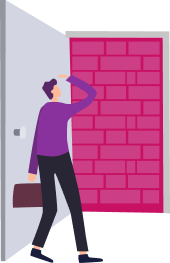

Первое, что нам нужно сделать, это проверить свою самооценку. Я думаю, что вы уже заметили, что у вас на этом уровне открылись новые тренажеры: «Норма» и «Самооценка». Тренажер «Самооценка» мы попробуем с вами прямо сейчас. Как только вы закончите смотреть это видео, сразу же переходите в тренажер «Самооценка» и пробуйте сделать в нем первую проработку.
Что нам для этого нужно?
Нужен, конечно, сам тренажер и нужна наша цель, которую мы будем прорабатывать через норму.
Тренажер «Самооценка»
совершенно противоположен всему тому, что мы с вами делали на 2-ом уровне. Он отличается от сопротивления, о котором мы говорили с вами на 3-ем уровне.
У этого тренажера другая основа.
И эта основа состоит в том, что вы классный просто так.
Вы имеете право испытывать уважение к себе просто так.
Просто потому, что вы есть, существуете.
Не как доказательство того, что вы имеете на что-то право или что вы классный и
можете испытывать уважение к себе.
Проверьте все свои цели прямо сейчас: вы их действительно хотите или только если вы их достигнете, сможете ощущать себя классным, достойным уважения?
Я КЛАССНЫЙ
Почему самооценка важна?
Не только потому что, когда она у тебя нормальная, ты классно себя ощущаешь и весь мир становится нормальным, перестает быть болезненным для тебя,
и ты сам себя начинаешь принимать все что в нем есть.
Возможно, у вас есть цель, которую вы уже прорабатывали на 2-ом уровне, убирали сопротивление на нее на 3-ем уровне, но ее так и не удалось проработать. И если у вас остались такие цели, вам необходимо посмотреть эту цель через самооценку. Что это значит?
Я КЛАССНЫЙ
Мы закрываем глаза и смотрим:
я классный. Мы видим определенные образы,
у нас приходят ощущения.
Попробуйте прямо сейчас продолжить фразу:
я классный, только если…
Только если что?
-
Я классный, только если достиг свою цель
-
Я классный, только если я никогда не сдаю свои цели
-
Я классный, только если зарабатываю такую-то сумму рублей в месяц
-
Я классный, если я вешу такое-то количество килограммов
-
Я классный, только если езжу на такой-то машине
и дальше — этот список можно сделать очень объемным.
И если на то, что я сейчас называю, вы чувствуете отклик, чувствуете такое нервное напряжение, которое больше похоже на чувство вины — вам нужно все это проработать в
тренажере «Самооценка».
Все цели,
которые завязаны на самооценке, вы достигаете не потому, что вы их хотите, а потому, что вам «надо».
Появляется деление целей на «надо» и «хочу».
Человек, у которого нормальная самооценка,
никогда не будет достигать цели,
которые ему «надо» достигать. Он всегда будет достигать только те цели,
которые он хочет.
При условии, что у него проработана
универсальная установка «Мои желания»
или в принципе с желаниями все было в порядке, он всегда будет двигаться к своим желаниям.
Человек с низкой самооценкой всегда будет двигаться из состояния «мне надо»: мне надо получить образование, мне надо пойти устроиться на работу, мне надо... и можно долго продолжать этот список.
Если у вас когда-нибудь в жизни возникал вопрос, как начать двигаться из того, что я хочу, а не из того, что мне надо, то самооценка —
это ответ на этот вопрос.
Прямо сейчас проверьте,
какие же из ваших целей завязаны на самооценке.
Не бойтесь это прорабатывать.
Не думайте, что если вы проработаете цель таким образом,
то вы не будете больше ее хотеть.
Даже если так случится —
вспомните про сопротивление на локальные результаты.
Вы помните, что нервное напряжение относительно цели всегда можно создать, всегда можно проработать желание иметь цель.
И у желания, проработанного таким образом, будет правильная мотивация, правильная энергия внутри этого желания. А любая цель,
связанная с «надо», имеет неправильную мотивацию.
Такие цели практически нереально достигать, не ломая себя очень сильно, не загоняя себя в жесткие рамки и не тратя всю свою силу воли на достижение целей, которые в принципе не принесут вам ощутимой радости и ощущения,
что вы реализовали то, что хотели.
